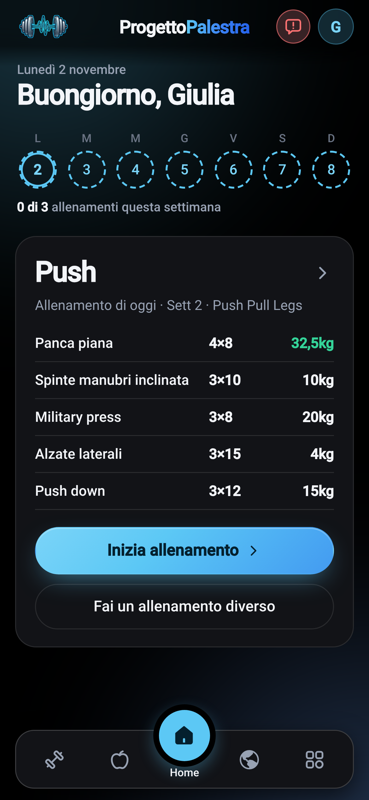
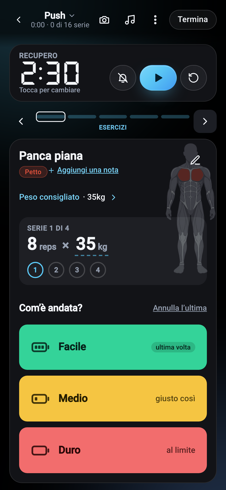

Schede di allenamento, storico dei progressi, dieta, supervisione del tuo PT e gli allenamenti degli altri utenti; tutto in un'app sola, neldal tuo telefono.


Inquadra, provala e facci sapereProvala subito dal link in bio
progettopalestra.it
L'app non sostituisce un medico, un nutrizionista o un allenatore.